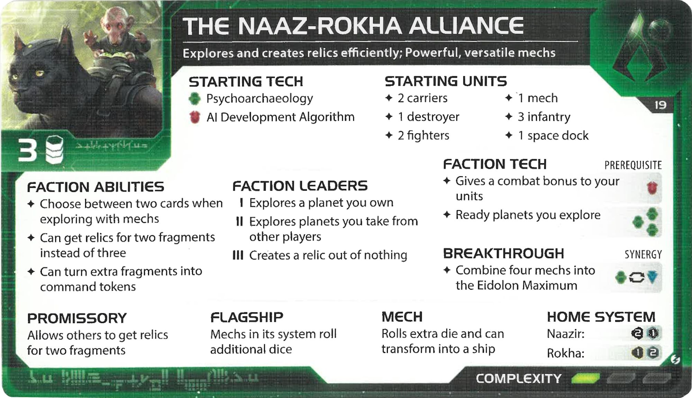
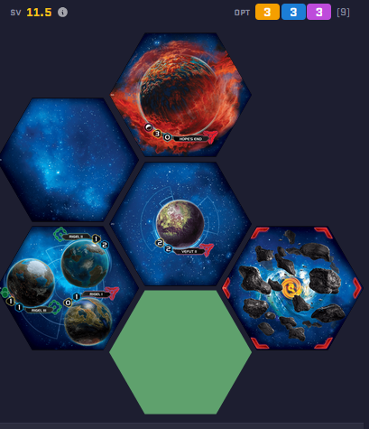
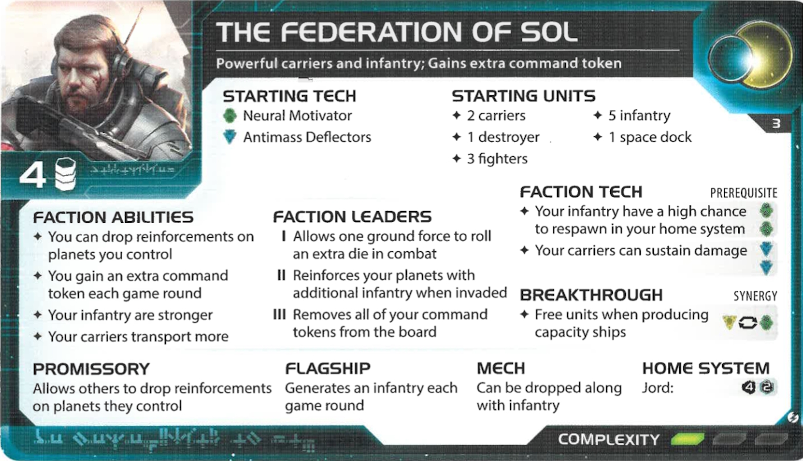
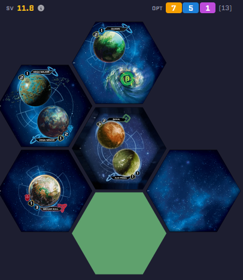

Beginner Friendly Session - Choose your destiny.

Faction Reference

Assigned Map Slice
The Naaz-Rokha Alliance are masters of exploration and mechs. They possess a unique ability to gain additional benefits from exploration cards and can use their mechs to roll extra dice in combat. Great for players who like finding treasures and holding strong planetary positions.

Faction Reference

Assigned Map Slice
The Federation of Sol are the quintessential "human" faction. They excel at flooding planets with infantry using their Orbital Drop ability and have a high command token gain. They are incredibly resilient and excellent at defending their territory, making them a very forgiving choice for new players.